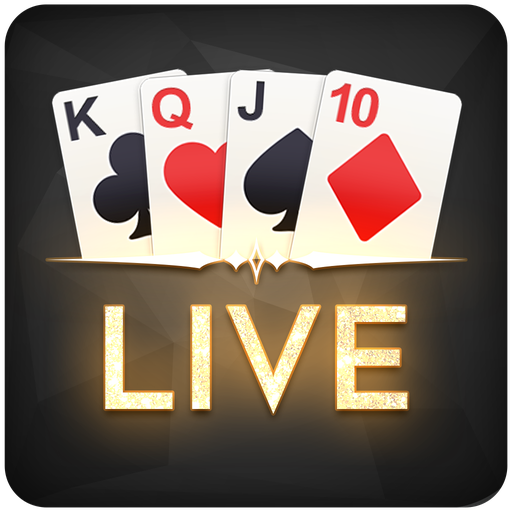
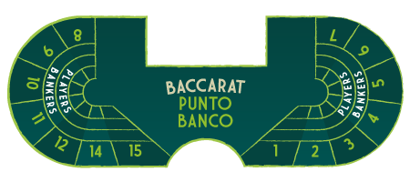
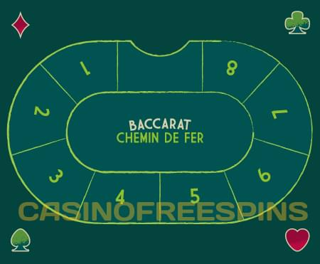
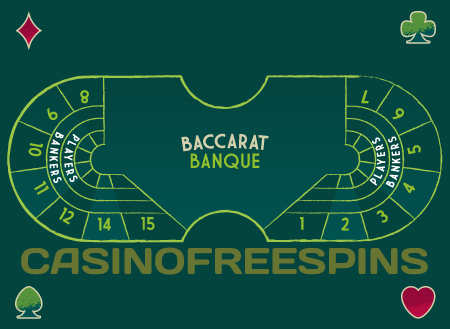

Ігор у казино досить багато і очі розбігаються при їх
виборі. Свою нішу серед всіх не могла не зайняти Баккара. Це
елітна гра, перевага якої не в складності, а в
ексклюзивності. Особливо вона цікава тим, що не вимагає
особливої майстерності, як, наприклад, покер. Для гри
практично не потрібно прораховувати ходи та запам'ятовувати
будь-які стратегії. Вона передбачає високі ставки чим і
захоплює багатьох гравців.
З появою онлайн Баккара - все стало ще доступнішим. Казино
пропонують різні варіанти форм цієї гри. Вони схожі з тими,
які є в реальних наземних казино, але в онлайні функції і
бонуси легше розширити. Саме тому Баккара онлайн набагато
привабливіша, ніж в реальному наземному казино. Основна мета
залишається незмінною - зібрати комбінацію з карт, яка була
б максимально близькою до 9. А більш детально можна
дізнатися нижче зі статті.
Коротка історія та основні правила гри, причини популярності
гри Баккара
"Baccarat" є французьким аналогом італійського "Baccara", що
в перекладі - "нуль" або "ніщо". Так як точне походження
цієї гри неможливо відслідкувати, за першість все ж борються
дві європейські країни: Франція і Італія. Існує теорія, що
Баккара - першоджерело найпопулярнішої гри Блекджек. Баккара
має велику кількість подібностей з блекджеком, але так як
Баккара передбачає меншу свободу гравців, ставки змінюються
частіше гравцями, відповідно, гра передбачає елементи успіху
і везіння. Баккара отримала вже знайомий нам вигляд ще при
Луї Філліпу. Ті історики, які хотіли дізнатися витоки
створення даної гри змогли знайти дані про певні релігійні
ритуали цивілізації єтрусків. Їх мета - визначити кандидата,
яка би підійшла для ролі верховної жриці. Вона обиралася,
грунтуючись на результатах кидку дев’ятигранної кістки. При
випаданні 9 або 8 балів (це число, яке близьке або
прирівнюється до числа тих богів, яким поклонялися) -
кандидатка була схвалена. При випаданні 6 або 7, це означало
тверде ні, а при ще меншому випаданні очок, могло вести за
собою навіть смерть дівчини.
Завдяки сучасним технологіям, дуже зручно грати в онлайн баккару, не
виходячи з дому. При чому завжди є вибір того чи іншого казино або
столу. А це ж значно розширює горизонти, чи не так? Баккара
полюбилася багатьом гравцям ще з 1980-го року. Не дивно, що перший
«бум» було створено Лас-Вегасом, коли гра пропонувалася людям в
більш простому варіанті. Ставки проводилися швидше, за рахунок чого
і збільшилася кількість підходів за годину. При такому варіанті у
казино збільшувалися переваги банку, чого немає в стандартній грі.
Навіть не з кожним роком, а з кожним місяцем число гравців зростає і
навіть ті, хто був противником казино не можуть встояти перед
барвистими іграми і привабливими бонусами.
Як вибрати найбільш підходяще казино для Баккара
Вибір гри - це ще не найголовніше, головне вибрати надійне
онлайн казино, що відповідало б необхідним вимогам, і
пропонувало б хороші бонуси і надійність виплат. Давайте
все-таки "пройдемося" по кожному з головним параметрів:

Live казино
Добре, коли є опція Live Казино, яка робить гру більш
яскравішою, цікавішою і максимально схожою з реальним
казино. Це одна з популярних функцій для любителів
насолоджуватися ігровим процесом на максимум - гра в
режимі реального часу. В такому випадку - збираються
живі гравці і реальний дилер, і процес проходить
максимально імітуючи живу гру. Кількість гравців
визначається самим столом.
Бонуси
Існує досить величезний вибір різних бонусів на ринку.
Кожне казино намагається пропонувати все більш вишукані
варіанти. Наприклад, найяскравіший варіант - це 100%
бонус на депозит! Наземні казино собі такого дозволити
не можуть, зате може саме онлайн варіант. Якщо говорити
про баккару, то ця гра має досить великий пул
різновидів. Хороші казино пропонують різні відсотки
виплат гравцям, а також доходи казино по всіх іграх.
Безопасность
Важливо! Перед тим як зареєструватися, ознайомтеся з
тими умовами, які пропонує онлайн казино. Враховуйте, що
воно повинно бути ліцензованим і мати хороші відгуки.
Будьте обережні при виборі і самої гри. Краще обходити
столи, які пропонують низьку різноманітність, а також не
дають докладної інформації про ігри. Остерігайтеся
підозрілих сайтів, у яких сумнівна якість ігор і немає
ліцензії. Навряд чи такі казино будуть виводити гроші.
Якість самого сайту та ігор, яке пропонується, говорить
про те, наскільки серйозно розробники підходять до
бізнесу, і в результаті - це говорить і про
відповідальність.
Зручні способи оплати в Баккара казино
Найголовнішим і зручним моментом в будь-якому онлайн казино є швидка
оплата. Ліцензійні казино підлаштовуються під клієнта і пропонують
різноманітний спектр способів оплати, при цьому намагаються
максимально убезпечити клієнта. Переказ з картки на рахунок вже
серед багатьох гравців відходить на другий план. Все частіше казино
підлаштовуються під сучасні миттєві способи оплати, тому можна
побачити і оплату з електронних гаманців і навіть оплату
криптовалютою. Онлайн Баккара стає трендовим напрямком серед крипто
депозитів. Криптовалюта має ряд переваг:
повна анонімність
спеціальні бонуси
швидкі транзакції
Віртуальна валюта закріплюється на ринку все міцніше, особливо, якщо
говорити про ігрову індустрію. І вже з'являється все більше казино,
які підключають цей вид оплати. Найчастіше, будь-які електронні
кошти перебувають на електронному гаманці, який підв'язується під
основну сторінку і тоді вільно можна поповнювати рахунок і виводити
кошти. Завжди необхідно пам'ятати, що тільки кращі ліцензовані
онлайн казино можуть запропонувати надійність і безпеку. Саме
подібні параметри стримують учасників гри, так як важко довірити
свої дані і гроші онлайн-версії. Насправді, якщо ви реєструєтесь в
ліцензованому онлайн казино, тоді можна не турбуватися за безпеку
ваших коштів та особистих даних. Оператори, які працюють в подібних
компаніях, мають хорошу репутацію і постійно проходять сучасні
перевірки від спеціальних сторонніх організацій. Вони тестують те,
як працює генератор випадкових чисел, який відповідає за чесність
запропонованих ігор, включаючи онлайн Баккара. Якщо казино повністю
ліцензоване, то воно щомісяця надає звітність про доходи. Вся
інформація шифрується за допомогою SSL. Це система, яка повністю
відповідає за вашу безпеку і за підключення до особистого кабінету.
Дуже важливо перевіряти логотип тієї інстанції, яка видає ліцензію.
Необхідно розуміти і переконатися в тому, що казино пропонує
безпечне підключення. Спокійно приступати до гри можливо тільки в
тому випадку, коли ви все перевірили, вивчили ліцензію і ви
довіряєте цьому казино.
Надійність казино, служба підтримки в Баккара-казино
Зрозуміло, що найважливіший пункт і показник будь-якого казино -
надійність. І не важливо, онлайн воно або наземне. Важливо, щоб
казино пропонувало цілодобову підтримку, яка була б доступною
для кожного гравця. Підтримка в онлайн казино відіграє одну з
першочергових ролей, адже важливе питання може нагрянути в
будь-який час доби, і його рішення іноді не може чекати
(особливо якщо це пов'язано з фінансами). Спочатку, варто
відзначити, що якщо самому казино приховувати нічого і воно
ліцензоване, то на сайті без проблем можна знайти чат швидкої
допомоги, номер гарячої лінії або електронну адресу. Деякі
казино дуже переживають за якість обслуговування і залишають
фізичну адресу, що, безсумнівно, є плюсом. Інформацію, яка
говорить про компетентність і відповідальності казино з легкістю
можна знайти на декількох мовах, включаючи цілодобову підтримку.
Тільки ліцензовані і відповідальні казино можуть пропонувати та
пропонують подібні опції. Адже вони на ринку планують бути не
один рік, і дуже дбають про свою репутацію.
Різновиди гри Баккара (Chemin de Fer, Punto Banco)
Згодом сформувалася безліч версій Баккара. Якщо говорити про
Іспанію, то там існує дуже схожа гра - Punto Banko. Ви часто
можете зустріти цю назву в онлайні, замість Баккара. Ця ж гра у
Франції називається як Chemin de Fer. У перекладі - "залізяка"
або "залізна дорога". Якщо ж говорити про інші популярні назви
Баккара – відома, як макао або "9". В онлайні все частіше
зустрічаються всі ці назви, маючи на увазі різні умови гри, при
цьому основні правила, все ж незмінні. Якщо говорити про
поширеність кожного виду гри, то Punto Banco одна з
найпопулярніших варіантів Баккара в Макао, Штатах, Англії і т.д.

У Пунто банко - дві основні ролі: учасник і банкір. Кожен
стіл має певне місце для карт. Якщо говорити про вибір
столу, то тут пропонується, зазвичай, кілька варіантів:
великий і малий столи. Якщо говорити про великий стіл, то за
ним одночасно стоять троє банкірів. У кожного при цьому своє
завдання: один - обмінює фішки і видає виграші, другий тасує
карти і забирає програшні ставки, а третій - переміщує здані
карти спеціальною лопаткою, а також голосно оголошує про
процеси: називає комбінації карт і оголошує переможця.
Тепер трохи про правила цього варіанту. У Пунто банко
використовується парна кількість колод, від 4-х до 8-ми.
Спочатку здається по дві карти між гравцем і круп'є. Дуже
часто банкіри заявляють про рахунок всім гравцям за столом
(в онлайн баккарі - висвічується текст) "Гравець 6", "Круп'є
3". Уже за наявністю загальних очок обидві сторони або
залишають, або ж підкуповують бали. Якщо одна із сторін
оголосила про наявність 8-9 балів, тоді гра закінчена і є
переможець. Якщо кожна зі сторін має по 7 і менше балів -
карти продовжують здаватися. Якщо учасник вирішив залишитися
"при своїх", круп'є грає за загальними правилами: йому
доводиться "добирати" при сумі карт від нуля до п'яти і він
залишається при своїх балах, якщо має суму 6-7 балів. Існує
певний регламент правил згідно якого гравець або круп'є
вирішують брати третю карту чи ні. Розглянемо на прикладі:
Гравцеві здали карти із загальним числом балів - 2 (3), а у
круп'є - від 0 до 4, тоді обом краще прикупити ще по одній
карті. Якщо ж у круп'є випало 5 балів або 7, то йому слід
утриматися і залишитися з уже наявними картами. Якщо ж при
здачі у гравця вийшло 5 (6) балів, то круп'є дозволено
прикупити карту в тому випадку, якщо його сума прирівнюється
від 0 до 6 балів. Також круп'є повинен утриматися від
покупки ще однієї карти, якщо у нього сім балів.

Дана версія була заснована ще в кінці 19 століття. Як
говорилося вище, з французької назва перекладається як
"залізяка" або "залізна дорога". Ця гра "народилася" в той
момент, коли вирішили трохи прискорити оригінальну гру. Адже
в той час залізниця вважалася найшвидшим видом транспорту.

Версія, яка є більш постійною грою, ніж попередня французька
версія. Банкіром використовуються три перемішані колоди
карт. Банкір буде займати своє місце до тих пір, поки не
зіграють всі карти (якщо не вирішить вийти за власним
бажанням або, в разі, якщо у нього закінчаться кошти).
Спочатку проводиться аукціон, тобто карти передаються
гравцеві, який захоче спробувати свої сили, і ризикнути
найбільшою сумою. Є варіанти, коли гравець першим вносить
своє ім'я в список гравців, в такому випадку, у нього
з'являється право першим оволодіти банком, і він ризикує
такою сумою, яку вважатиме за потрібне.
Основні правила гри в онлайн Баккара все ж незмінні, які б
версії ви б не вибрали. Мета самої гри полягає в тому, щоб
зібрати комбінацію карт, яка максимально наблизиться до
дев'ятки. Комбінації карт відрізняються від багатьох
карткових ігор. При цьому їх дуже легко зрозуміти на
інтуїтивному рівні. Тому для того, щоб повністю зрозуміти
правила, досить просто зіграти пару раундів. Цінність карт
прирівнюється до їх номіналу від 2-9. Туз прирівнюється до 1
балу. Оцінюються як "0" такі карти: 10, валет, дама, король.
Від наявності цих карт нічого не залежить. Якщо ж гравець
має 10 і більше очок, тоді з цих очок вираховуються 10, а
після відбувається такий рахунок:
0-1-2-3-4-5-6-7-8-9-0-1-2-3-4-5 ... і т.д. Наприклад, 8 і 4
будуть вважатися не як 12, а як 2. Насправді, правила досить
легко запам'ятовуються. Саме вони і визначають в якому
випадку банкір і гравець будуть брати більшу кількість карт,
а коли їм це буде заборонено. Дійсно, необхідно трохи
досвіду і часу, щоб розібратися і запам'ятати певні ходи.
При цьому правила досить жорсткі, і поки навчитеся, ви
навряд чи зможете наробити багато помилок. В цьому випадку,
дуже зручно грати онлайн в Баккара. Для цього казино
розробляють безкоштовні версії, які без фінансового збитку
допомагають набратися досвіду і відчути свою впевненість.
Погодьтеся, це ж краще в рази від наземного казино, яке не
може вам запропонувати подібних функцій.
Існують певні ставки в Баккара:
пунто - ставиться на те, що переможе гравець. При перемозі
виплати - 1: 1
банко - ставиться на перемогу банкіра, оплачується як 1: 1,
при цьому 5% утримує казино.
нічия - ставиться на рівну кількість очок на руках.
оплачується як 8: 1 або ж 9: 1, що вже залежить від правил
казино.
Існує ще таке правило "правило третьої карти":
У грі Баккара допускається додавати третю карту, якщо у гравця
на руках менш, ніж 6 очок. Для банкіра такі правила трохи інші:
якщо загальна кількість балів у банкіра 6 і більше, він може
не брати карту до тих пір, поки її не візьме сам гравець.
при наявності у банкіра очок від 0 до 2-х, він бере третю
карту
при 3-х балах - круп'є не бере нову карту, якщо його опонент
не отримав 8.
при 4-х балах - круп'є дозволено брати карту в тому випадку,
коли у гравця сума не прирівнюється до: 0, 1, 8, 9
при 5 балах - дозволено взяти карту за умови, що у
супротивника немає суми: 4, 5, 6, 7 або ж учасник ще не брав
карту взагалі
при 6 балах - дозволено брати карту в тому випадку, якщо
гравець має додаткову карту номіналом: 6,7.
при 7 балах - більше карт не бере.
Виходячи з цих правил можна зробити висновок, що дії банкіра
повністю залежать від суми очок у гравця.
Види Баккара (speed baccarat, baccarat squeeze, vip baccarat,
progressive baccarat, mini baccarat)
Онлайн Баккара має безліч варіантів, в цьому і є її перевага
перед реальними казино. Гравці по всьому світу вдосконалюють
варіанти і роблять їх ще більш різноманітними і цікавими.
Давайте коротко поговоримо про самі "відомі":
Це найшвидший варіант гри, який існує на сьогодні. Це надає
відчуття несподіванки і напруги. Баккара просто летить з
неймовірною швидкістю, її раунд триває менше 30 секунд. При
цьому правила залишаються незмінними.
Завдяки технологіям, цей варіант гри максимально імітує
реальне казино. Карти здаються сорочкою вгору, при чому у
круп'є, при відкритті карт, з'являється можливість злегка
відкрити карту, при цьому ховаючи її номінал. Це не може
залишити байдужим нікого і явно додасть гостроти відчуттів.
Баккара, свого часу була привілеєм багатих людей і віп
версія це явно демонструє. У цьому варіанті онлайн Баккара
тільки високі ставки і чистий адреналін.
Сучасно адаптована версія, де до стандартних правил
з'явилася можливість виграти джекпот. Якщо ж кілька гравців
поставили ставку на сам джекпот і виграли, то він рівномірно
розподіляється між усіма учасниками.
Це звичайна версія стандартного варіанту Баккара, просто за
основу беруться не 8 колод карт, а 6. Також в міні-версії
пропонуються ставки нижчі ніж у звичайної версії.
Базові стратегії гри в баккара
Звичайно ж, базовими стратегіями гри будуть - повне ознайомлення
з грою і її правилами, так як за кожним столом вони можуть
відрізнятися. Краще робити ставку на перемогу круп'є.
Рекомендуємо ніколи не ставити на нічию. Хоч за нею і стоїть
великий виграш, вона, найчастіше, є програшною.
Перед тим, як перейти до гри на гроші, не забувайте, що вам
краще буде потренуватися на безкоштовних версіях, які допоможуть
набути впевненості в собі і своїх силах.
FAQ
Найчастіше це 8 колод, винятком є міні-версія, де
використовується 6 колод.
Як правило, ні, не працюють. У цій грі надається не дуже
велика свобода дій, а при вдалій ставці перевага не дуже
висока.
Баккара нескладна гра, тому її легко буде освоїти новачкові.
При цьому краще завжди починати вчитися з безкоштовних
версій, які допомагають попрактикуватися і зрозуміти весь
сенс гри. Варто приділити увагу і правилам, так як вони
різні для кожного зі столів. Необхідно чітко розуміти яку
суму ви можете собі дозволити програти, так як грати стоїть
не з метою заробітку, а для задоволення.
Звичайно ж варто вибирати ліцензоване казино, яке має хорошу
репутацію. При цьому багато казино пропонують новачкам при
реєстрації різні привабливі бонуси, не поспішайте легко
погоджуватися на всі запропоновані умови. Спочатку необхідно
впевнитися і прочитати всі умови, включаючи маленький шрифт.
Ви можете використовувати будь-який зручний для вас спосіб
оплати. В незалежності від того, банкомат це, пластикова
карта або ж електронний гаманець. Ви можете вносити кошти в
будь-якій зручній для вас валюті.